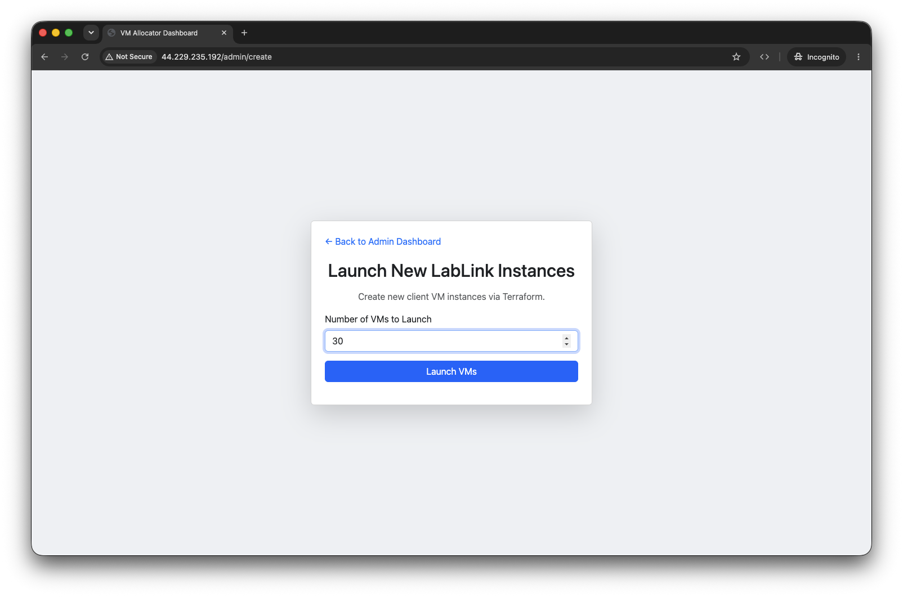
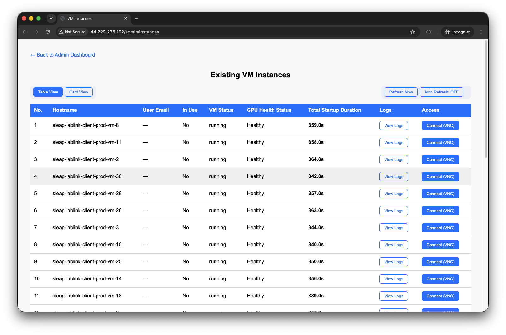
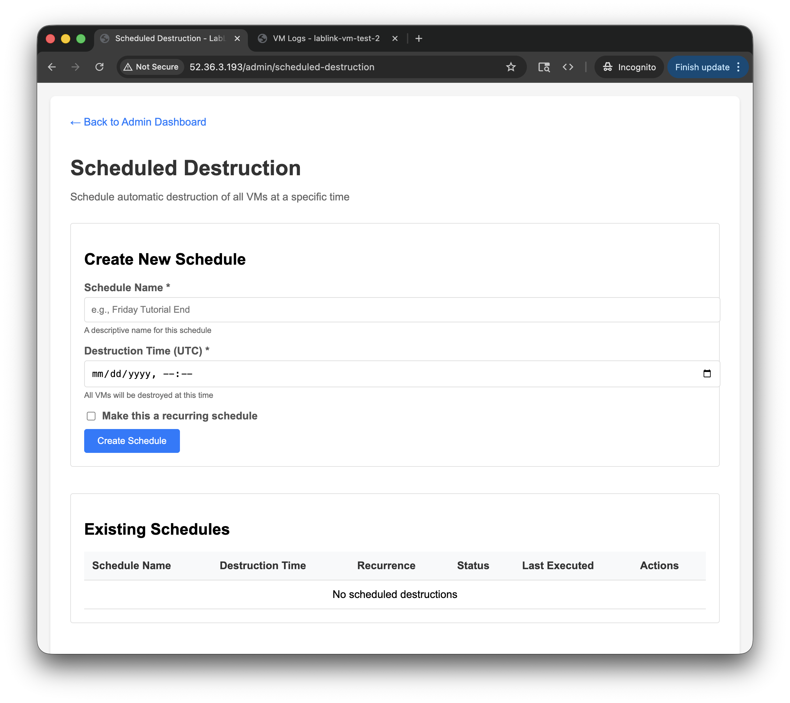
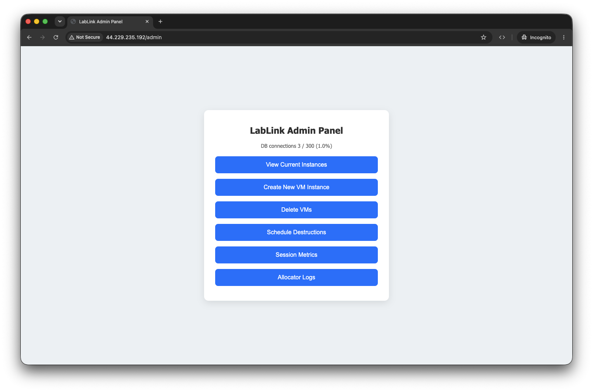
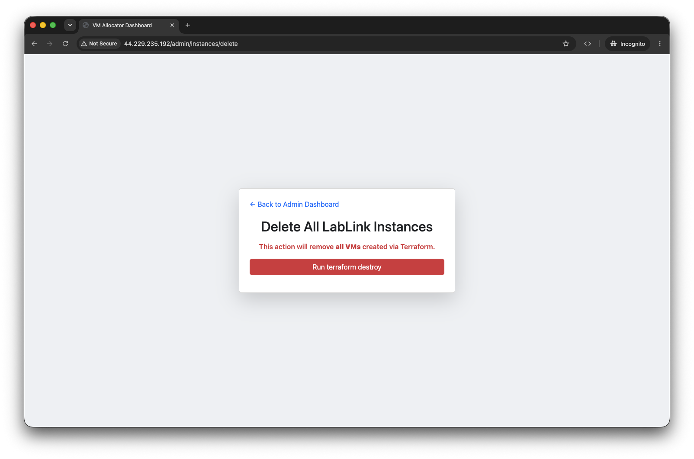

Workshop Guide¶
A step-by-step guide for running a hands-on workshop with LabLink, from setup to cleanup.
Prerequisites
This guide assumes you have already deployed LabLink and configured it for your software.
Before the Workshop¶
1. Create VMs¶
Spin up VMs ahead of time so they're ready when participants arrive. VMs take approximately 5 minutes to provision.
- Navigate to the admin panel at
http://<allocator-ip>/admin - Log in with your admin credentials
- Click "Create VMs"
- Enter the number of VMs to launch (one per participant, plus a few extras)
- Click "Launch VMs"

Tip
Create a few extra VMs beyond your expected headcount. You can always destroy unused ones later, but creating more mid-session takes 5 minutes.
2. Verify VMs Are Healthy¶
Wait for all VMs to show "running" status in the dashboard before the workshop begins.

The dashboard shows the following for each VM:
| Column | Description |
|---|---|
| Hostname | VM instance identifier |
| Health | Overall VM health status (running, initializing, stopped) |
| GPU Health | GPU availability and CUDA status |
| Logs | Link to view startup and runtime logs for the VM |
| Assigned CRD | Chrome Remote Desktop connection link for the VM |
| User Email | Email of the participant assigned to the VM |
What if a VM is stuck?
If a VM stays in "initializing" for more than 10 minutes or shows "error" status, it will be automatically rebooted. Check the VM logs for details.
3. (Optional) Schedule Auto-Destruction¶
If your workshop has a fixed end time, schedule VMs to be automatically destroyed:
- Set the desired destruction date and time in the admin panel
- Confirm the schedule

This is useful as a safety net to avoid leaving VMs running (and incurring costs) if you forget to clean up manually.
Share with Participants¶
What to Share¶
Give participants the allocator URL:
Or if you configured DNS:
What Participants Do¶
- Visit the URL in their browser
- Enter their email address
- They receive a Chrome Remote Desktop (CRD) link to their assigned VM
- Click the link to open a full desktop with your software pre-installed
No installation, no setup -- participants only need a Chrome browser.
During the Workshop¶
Monitor the Dashboard¶
Keep the admin panel open to track participant activity:

- Health column shows if VMs are running normally
- GPU Health confirms GPU availability for compute workloads
- Assigned CRD shows which participants have been assigned VMs
- User Email shows who is using each VM
Adding More VMs¶
If more participants arrive than expected:
- Click "Create VMs" in the admin panel
- Enter the additional number needed
- Click "Launch VMs"
New VMs are created without affecting existing running VMs. They'll be ready in about 5 minutes.
Handling Issues¶
- VM shows "error": The auto-reboot service will attempt to recover it automatically (up to 3 times). Check the logs link for details.
- Participant can't connect: Verify their VM shows "running" status and that the CRD link is assigned. Try having them refresh the allocator page to get a new link.
- All VMs assigned: Create additional VMs as described above.
End of Workshop¶
1. Extract Participant Data¶
Before destroying VMs, download any files participants created:
- Click "Download User Data" in the admin panel
- The allocator collects files matching your configured extension (e.g.,
.slp) from each VM - A zip file downloads with all participant work

Do this before destroying VMs
Files are not recoverable after VMs are destroyed. Always extract data first.
The file extension to collect is configured in your config.yaml:
2. Destroy VMs¶
Once data is collected, tear down all VMs:
- Click "Destroy All VMs" in the admin panel
- Confirm the action
This terminates all client EC2 instances and clears VM records from the database.
After the Workshop¶
Destroy the Allocator (Optional)¶
If you don't need LabLink running until your next workshop, destroy the allocator infrastructure to stop incurring costs:
See Deployment for details.
Review Costs¶
Check Cost Estimation for guidance on reviewing your AWS bill and optimizing costs for future workshops.
Related¶
- API Endpoints for programmatic access to admin features
- Configuration for admin password and app settings
- Security & Access for authentication details
- Troubleshooting for common issues